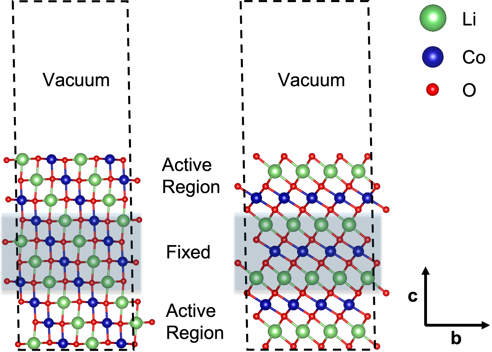

Slab model surface enumeration
Slab model preparation
The slab model can be truncated from the bulk structure model. Assume now, you already have a slab model. The DFT structure input file in VASP format should like this. This is an example of LiCoO2 slab model with (104) facet truncated on the surface.
Li4 Co3 O8 # system description
1.0 # scaling factor
2.832550 0.000000 0.000000 # lattice
-1.416275 2.453061 0.000000 # lattice
0.000000 0.000000 31.000000 # lattice
Li Co O # species names
4 3 8 # ions per species
Selective dynamics # extra flags to define constrains
direct # direct fractional coordinates of ion positions
0.000000 0.000000 0.199664 F F F Li # atom index = 0
0.333333 0.666667 0.047755 T T T Li # atom index = 1
0.666667 0.333333 0.351573 F F F Li # atom index = 2
0.333333 0.666667 0.503483 T T T Li # atom index = 3
0.666667 0.333333 0.123709 T T T Co # atom index = 4
0.333333 0.666667 0.275619 F F F Co # atom index = 5
0.000000 0.000000 0.427529 T T T Co # atom index = 6
0.333333 0.666667 0.156909 T T T O # atom index = 7
0.000000 0.000000 0.090509 T T T O # atom index = 8
0.666667 0.333333 0.242419 F F F O # atom index = 9
0.666667 0.333333 0.005000 T T T O # atom index = 10
0.000000 0.000000 0.546237 T T T O # atom index = 11
0.000000 0.000000 0.308819 F F F O # atom index = 12
0.666667 0.333333 0.460728 T T T O # atom index = 13
0.333333 0.666667 0.394328 T T T O # atom index = 14
Note that the surface active regions are defined by having the selective dynamics labeled at the end, represented by “T T T” as relaxed and “F F F” as fixed. These properties are required to build a slab model.
Note
Please make sure that the input slab model has the statement of constraints because the code takes use of the constraints to distinguish relaxed and fixed regions in the slab model.
The following figures show the example (104) and (001) surface slab models of LiCoO2 (left: (104), right: (001)).
{kind=link}
Input json file
Before actually run the script, let’s write/edit our input file first. We use a JSON format file here to define all the necessary parameters. In general, it looks like:
{
"target_slab_path": "path to your input slab model", # key: str, value: str
"replacements": { # Species and occupancy dictionaries containing the species mapping
# in string-string pairs; key: str, value: dict
"target species 1 in the model": { # key: str, value: dict
"same or different species":
[composition1, composition2, ...] # key: str, value: list of float numbers
},
"target species 2 in the model": {
"same or different species": [composition1, composition2, ...]
}
},
"num_layers_enumed":{ # Number of layers that will be enumerated; key: str, value: dict
"target species 1 in the model": num of layers 1, # key: str, value: int
"target species 2 in the model": num of layers 2
},
"symmetric": true, # Symmetrization operation flag; # key: str, value: bool
"max_cell_size": 4 # Maximum cell size to generate; # key: str, value: int
}
Probably, this is too abstract to understand.Let’s then focus on the following example of LiCoO2 (104) surface model again and see its input JSON file.
{
"target_slab_path": "the path to the example input slab model",
"replacements": {
"Li": {
"Li": [1.0, 0.75]
},
"O": {
"O": [0.5, 0.25]
}
},
"num_layers_enumed":{
"Li": 1,
"O": 1
},
"symmetric": true,
"max_cell_size": 4
}
The first key in the dictionary is “target_slab_path”. You should define the path to your input slab model. Note: your slab model should have the same format as mentioned above: Slab model preparation.
The second key is “replacements”. Here you should define the species that you want to enumerate as well as the composition of this species after enumeration. For example, “Li”: {“Li”: [1.0, 0.75]} stands for that all Li atoms will be replaced by 100% and 75% Li atoms. In other words, 0% and 25% Li vacancies will be generated on the surface.
If you also want to do substitution along with the enumeration, you can have “Li”: {“Na”: [1.0, 0.75]}. In this case, All Li atoms will be replaced by 100% and 75% Na atoms, respectively.
If multiple species are defined and going to be enumerated, the pairwise cross product of compositions will be generated. For example here, the overall species and occupancy dictionaries should look like: {{“Li”: 1.0, “O”: 0.5}, {“Li”: 1.0, “O”: 0.25}, {“Li”: 0.75, “O”: 0.5}, {“Li”: 0.75, “O”: 0.25}}.
The third key is “num_layers_enumed”. You can define the number of layers that will be enumerated. For example, {“Li”: 1, “O”: 1} means that only the first “Li” and “O” layers will be enumerated. In the above figures which show the example (104) and (001) surface slab models of LiCoO2, they have 10 and 15 layers, respectively. The LiCoO2 (104) surface always has Li, Co, and O in layers within stoichiometric ratio. By contrary, the LiCoO2 (001) surface always has distinct pure Li, Co, and O layers.
The fourth key is “symmetric”. This will control whether the enumerated slab models will be symmetrized.
The fifth key is “max_cell_size”. This is used to define the maximum number of supercells of the input slab model.
Command line execution
The general usage of the code can be seen by calling:
$ surface-enumeration.py --help
All of the available options and their default values will be shown.
General format:
$ surface-enumeration.py JSON_FILE -g
For example, you can go to surface-pd
and try to do a full enumeration on the (104) surface slab model of
LiCoO2.
$ surface-enumeration.py example/enumeration-examples/input/input-LCO.json
For this slab model, the most top O atoms (8 atoms after creating the supercell) will be enumerated. The first and second top surface Li atoms (8 atoms after creating the supercell) will also be enumerated.
If everything goes well, you should see the following:
target_cell_size = 2
Composition of ['Li', 'O'] on the surface will be [[1.0, 0.75, 0.5, 0.25, 0.0],
[1.0, 0.75, 0.5, 0.25, 0.0]], respectively.
The enumeration found 1(0+1) distinct structures for ['Li', 'O'] with [1.0, 1.0] composition.
The enumeration found 6(6+0) distinct structures for ['Li', 'O'] with [1.0, 0.75] composition.
The enumeration found 8(8+0) distinct structures for ['Li', 'O'] with [1.0, 0.5] composition.
The enumeration found 6(6+0) distinct structures for ['Li', 'O'] with [1.0, 0.25] composition.
The enumeration found 1(0+1) distinct structures for ['Li', 'O'] with [1.0, 0.0] composition.
The enumeration found 6(6+0) distinct structures for ['Li', 'O'] with [0.75, 1.0] composition.
The enumeration found 24(24+0) distinct structures for ['Li', 'O'] with [0.75, 0.75] composition.
The enumeration found 36(36+0) distinct structures for ['Li', 'O'] with [0.75, 0.5] composition.
The enumeration found 24(24+0) distinct structures for ['Li', 'O'] with [0.75, 0.25] composition.
The enumeration found 6(6+0) distinct structures for ['Li', 'O'] with [0.75, 0.0] composition.
The enumeration found 8(8+0) distinct structures for ['Li', 'O'] with [0.5, 1.0] composition.
The enumeration found 36(36+0) distinct structures for ['Li', 'O'] with [0.5, 0.75] composition.
The enumeration found 52(52+0) distinct structures for ['Li', 'O'] with [0.5, 0.5] composition.
The enumeration found 36(36+0) distinct structures for ['Li', 'O'] with [0.5, 0.25] composition.
The enumeration found 8(8+0) distinct structures for ['Li', 'O'] with [0.5, 0.0] composition.
The enumeration found 6(6+0) distinct structures for ['Li', 'O'] with [0.25, 1.0] composition.
The enumeration found 24(24+0) distinct structures for ['Li', 'O'] with [0.25, 0.75] composition.
The enumeration found 36(36+0) distinct structures for ['Li', 'O'] with [0.25, 0.5] composition.
The enumeration found 24(24+0) distinct structures for ['Li', 'O'] with [0.25, 0.25] composition.
The enumeration found 6(6+0) distinct structures for ['Li', 'O'] with [0.25, 0.0] composition.
The enumeration found 1(0+1) distinct structures for ['Li', 'O'] with [0.0, 1.0] composition.
The enumeration found 6(6+0) distinct structures for ['Li', 'O'] with [0.0, 0.75] composition.
The enumeration found 8(8+0) distinct structures for ['Li', 'O'] with [0.0, 0.5] composition.
The enumeration found 6(6+0) distinct structures for ['Li', 'O'] with [0.0, 0.25] composition.
The enumeration found 1(0+1) distinct structures for ['Li', 'O'] with [0.0, 0.0] composition.
376 distinct structures are found totally.
If the --generate-poscar optional argument is defined, you should be
able to see the saved enumerated slab models locally. The slab models are
stored in VESTA format and should be able visualize via
VESTA.